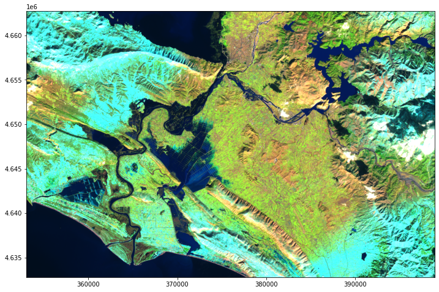

Inference on Sentinel-2 SAFE files
Contents
Inference on Sentinel-2 SAFE files¶
Last Modified: 23-04-2021
Authors: Gonzalo Mateo-García
This notebook shows how to download Sentinel-2 images from Copernicus Open Hub over an area of interest (AoI). We will read the images and run inference on them. We will use the sentinelsat package to download the images and the ml4floods.data.S2_SAFE_reader to read the SAFE files.
# install ml4floods
!pip install git+https://github.com/spaceml-org/ml4floods#egg=ml4floods
Step 0: Install sentinelsat to download images from Copernicus Open Hub¶
!pip install sentinelsat
Step 1: Define Area of Interest and dates to search products¶
from shapely.geometry import shape
from datetime import datetime, timedelta
import os
import rasterio.warp
date_event = datetime.strptime("2021-02-12","%Y-%m-%d")
date_start_search = date_event
date_end_search = date_start_search + timedelta(days=10)
area_of_interest_geojson = {'type': 'Polygon',
'coordinates': (((19.483318354000062, 41.84407200000004),
(19.351701478000052, 41.84053242300007),
(19.298659824000026, 41.871157520000054),
(19.236388306000038, 41.89588351100008),
(19.22956438700004, 42.086957306000045),
(19.327827977000027, 42.09102668200006),
(19.778082109000025, 42.10312055000003),
(19.777652446000047, 41.97309238100007),
(19.777572772000042, 41.94912981900006),
(19.582705341000064, 41.94398333100003),
(19.581417139000052, 41.94394820700006),
(19.54282145700006, 41.90168177700008),
(19.483318354000062, 41.84407200000004)),)}
area_of_interest = shape(area_of_interest_geojson)
Step 2: Query Sentinel-2 products¶
from sentinelsat.sentinel import SentinelAPI
api = SentinelAPI('USERNAME', 'PASSWORD', 'https://scihub.copernicus.eu/apihub')
products = api.query(area=str(area_of_interest),
date=(date_start_search, date_end_search),
platformname='Sentinel-2',
producttype='S2MSI1C',
cloudcoverpercentage=(0, 40))
products_gpd = api.to_geodataframe(products)
products_gpd
/home/gonzalo/miniconda3/envs/ml4fl_py38/lib/python3.8/site-packages/pyproj/crs/crs.py:53: FutureWarning: '+init=<authority>:<code>' syntax is deprecated. '<authority>:<code>' is the preferred initialization method. When making the change, be mindful of axis order changes: https://pyproj4.github.io/pyproj/stable/gotchas.html#axis-order-changes-in-proj-6
return _prepare_from_string(" ".join(pjargs))
| title | link | link_alternative | link_icon | summary | ondemand | datatakesensingstart | beginposition | endposition | ingestiondate | ... | producttype | platformidentifier | orbitdirection | platformserialidentifier | processinglevel | identifier | datastripidentifier | granuleidentifier | uuid | geometry | |
|---|---|---|---|---|---|---|---|---|---|---|---|---|---|---|---|---|---|---|---|---|---|
| 7855c95e-6e00-4a7d-ba8c-7f8ad5f7beca | S2B_MSIL1C_20210218T094029_N0209_R036_T34TCM_2... | https://scihub.copernicus.eu/apihub/odata/v1/P... | https://scihub.copernicus.eu/apihub/odata/v1/P... | https://scihub.copernicus.eu/apihub/odata/v1/P... | Date: 2021-02-18T09:40:29.024Z, Instrument: MS... | false | 2021-02-18 09:40:29.024 | 2021-02-18 09:40:29.024 | 2021-02-18 09:40:29.024 | 2021-02-18 16:09:49.943 | ... | S2MSI1C | 2017-013A | DESCENDING | Sentinel-2B | Level-1C | S2B_MSIL1C_20210218T094029_N0209_R036_T34TCM_2... | S2B_OPER_MSI_L1C_DS_VGS2_20210218T115327_S2021... | S2B_OPER_MSI_L1C_TL_VGS2_20210218T115327_A0206... | 7855c95e-6e00-4a7d-ba8c-7f8ad5f7beca | MULTIPOLYGON (((18.60606 41.43884, 19.65397 41... |
| 6c813d56-a984-40bd-8752-bee7cbc81146 | S2B_MSIL1C_20210215T093029_N0209_R136_T34TCM_2... | https://scihub.copernicus.eu/apihub/odata/v1/P... | https://scihub.copernicus.eu/apihub/odata/v1/P... | https://scihub.copernicus.eu/apihub/odata/v1/P... | Date: 2021-02-15T09:30:29.024Z, Instrument: MS... | false | 2021-02-15 09:30:29.024 | 2021-02-15 09:30:29.024 | 2021-02-15 09:30:29.024 | 2021-02-15 15:44:55.930 | ... | S2MSI1C | 2017-013A | DESCENDING | Sentinel-2B | Level-1C | S2B_MSIL1C_20210215T093029_N0209_R136_T34TCM_2... | S2B_OPER_MSI_L1C_DS_EPAE_20210215T105122_S2021... | S2B_OPER_MSI_L1C_TL_EPAE_20210215T105122_A0206... | 6c813d56-a984-40bd-8752-bee7cbc81146 | MULTIPOLYGON (((18.60606 41.43884, 19.91997 41... |
2 rows × 36 columns
products_gpd.plot(alpha=.1)
<AxesSubplot:>
product_to_download = products_gpd.iloc[1] # get 2 row of the table
product_to_download
title S2B_MSIL1C_20210215T093029_N0209_R136_T34TCM_2...
link https://scihub.copernicus.eu/apihub/odata/v1/P...
link_alternative https://scihub.copernicus.eu/apihub/odata/v1/P...
link_icon https://scihub.copernicus.eu/apihub/odata/v1/P...
summary Date: 2021-02-15T09:30:29.024Z, Instrument: MS...
ondemand false
datatakesensingstart 2021-02-15 09:30:29.024000
beginposition 2021-02-15 09:30:29.024000
endposition 2021-02-15 09:30:29.024000
ingestiondate 2021-02-15 15:44:55.930000
generationdate 2021-02-15 10:51:22
orbitnumber 20611
relativeorbitnumber 136
cloudcoverpercentage 4.9774
sensoroperationalmode INS-NOBS
level1cpdiidentifier S2B_OPER_MSI_L1C_TL_EPAE_20210215T105122_A0206...
tileid 34TCM
hv_order_tileid TM34C
format SAFE
processingbaseline 02.09
platformname Sentinel-2
filename S2B_MSIL1C_20210215T093029_N0209_R136_T34TCM_2...
instrumentname Multi-Spectral Instrument
instrumentshortname MSI
size 715.15 MB
s2datatakeid GS2B_20210215T093029_020611_N02.09
producttype S2MSI1C
platformidentifier 2017-013A
orbitdirection DESCENDING
platformserialidentifier Sentinel-2B
processinglevel Level-1C
identifier S2B_MSIL1C_20210215T093029_N0209_R136_T34TCM_2...
datastripidentifier S2B_OPER_MSI_L1C_DS_EPAE_20210215T105122_S2021...
granuleidentifier S2B_OPER_MSI_L1C_TL_EPAE_20210215T105122_A0206...
uuid 6c813d56-a984-40bd-8752-bee7cbc81146
geometry (POLYGON ((18.60606083644028 41.43883628550716...
Name: 6c813d56-a984-40bd-8752-bee7cbc81146, dtype: object
Step 3: download and unzip the Sentinel-2 image¶
folder_download = "S2SAFE_PRODUCTS"
os.makedirs(folder_download,exist_ok=True)
uuid = product_to_download["uuid"]
product = api.download(uuid, folder_download)
if not product["Online"]:
print("File is not available try with newest dates")
Downloading: 100%|██████████| 750M/750M [05:41<00:00, 2.20MB/s]
MD5 checksumming: 100%|██████████| 750M/750M [00:12<00:00, 58.5MB/s]
# unzip the file
import zipfile
file_name = os.path.join(folder_download, product_to_download["title"] + ".zip")
assert os.path.exists(file_name), f"Product expected name {file_name} not found"
# Exctract the file
zip_ref = zipfile.ZipFile(file_name, "r")
zip_ref.extractall(folder_download)
zip_ref.close()
#
s2_safe_folder = os.path.join(
folder_download, os.path.basename(os.path.splitext(file_name)[0])+".SAFE")
assert os.path.exists(s2_safe_folder), f"Folder {s2_safe_folder} not found"
Step 4: read the image over the AoI polygon¶
from ml4floods.data import S2_SAFE_reader
s2obj = S2_SAFE_reader.s2loader(s2_safe_folder, out_res=10)
s2obj.crs, s2obj.transform, s2obj, s2obj.polygon()
(CRS.from_epsg(32634),
Affine(10.0, 0.0, 300000.0,
0.0, -10.0, 4700040.0),
<ml4floods.data.S2_SAFE_reader.S2ImageL1C at 0x7f92654a1be0>,
<shapely.geometry.polygon.Polygon at 0x7f9267edf220>)
# Get bounds of the polygon in CRS of S2 image
bounds_pol_read = area_of_interest.bounds
bounds_pol_read_s2crs =rasterio.warp.transform_bounds({'init': 'epsg:4326'},
s2obj.crs,
*bounds_pol_read)
# Read the data (all bands will be reprojected to out_res)
data, transform = s2obj.load_bands_bbox(bounds_pol_read_s2crs)
data.shape,transform
((13, 2995, 4596),
Affine(10.0, 0.0, 353008.60473929264,
0.0, -10.0, 4662742.335279502))
import matplotlib.pyplot as plt
from ml4floods.visualization import plot_utils
plt.figure(figsize=(12,8))
plot_utils.plot_swirnirred_image(data, transform=transform)

Step 5: Run inference on the image¶
Now we’re going to run inference on the Sentinel-2 image. See the Run inference notebook for a detailed tutorial on this.
If you’re running this tutorial in Google Colab you need to ‘add a shortcut to your Google Drive’ from the public Google Drive folder:

experiment_name = "WFV1_unet"
try:
from google.colab import drive
drive.mount('/content/drive')
assert os.path.exists('/content/drive/My Drive/Public WorldFloods Dataset'), "Add a shortcut to the publice Google Drive folder: https://drive.google.com/drive/u/0/folders/1dqFYWetX614r49kuVE3CbZwVO6qHvRVH"
google_colab = True
path_to_dataset_folder = '/content/drive/My Drive/Public WorldFloods Dataset'
dataset_folder = os.path.join(path_to_dataset_folder, "worldfloods_v1_0_sample")
folder_name_model_weights = os.path.join(path_to_dataset_folder, experiment_name)
except ImportError as e:
print(e)
path_to_dataset_folder = 'worldfloods_v1_0_sample'
folder_name_model_weights = os.path.join(path_to_dataset_folder, experiment_name)
if not os.path.exists(folder_name_model_weights):
import gdown
os.makedirs(folder_name_model_weights, exists_ok=True)
gdown.download_folder(id="1Oup-qVD1U-re3lIQkw7TOKJsdu90blsk", quiet=False, use_cookies=False,
output=folder_name_model_weights)
Step 5a: load the inference_function¶
from ml4floods.models.config_setup import get_default_config
from ml4floods.models.model_setup import get_model
from ml4floods.models.model_setup import get_model_inference_function
config_fp = os.path.join(folder_name_model_weights,"config.json")
config = get_default_config(config_fp)
config["model_params"]["max_tile_size"] = 128
config["model_params"]['model_folder'] = path_to_dataset_folder
config["model_params"]['test'] = True
model = get_model(config.model_params, experiment_name)
model.to("cuda")
inference_function = get_model_inference_function(model, config,apply_normalization=True)
Loaded Config for experiment: WFV1_unet
{ 'data_params': { 'batch_size': 32,
'bucket_id': 'ml4floods',
'channel_configuration': 'all',
'filter_windows': False,
'input_folder': 'S2',
'loader_type': 'local',
'num_workers': 8,
'path_to_splits': '/worldfloods/public',
'target_folder': 'gt',
'test_transformation': { 'normalize': True,
'num_classes': 3,
'totensor': True},
'train_test_split_file': 'worldfloods/public/train_test_split.json',
'train_transformation': { 'normalize': True,
'num_classes': 3,
'totensor': True},
'window_size': [256, 256]},
'deploy': False,
'experiment_name': 'WFV1_unet',
'gpus': '0',
'model_params': { 'hyperparameters': { 'channel_configuration': 'all',
'label_names': [ 'land',
'water',
'cloud'],
'lr': 0.0001,
'lr_decay': 0.5,
'lr_patience': 2,
'max_epochs': 25,
'max_tile_size': 256,
'model_type': 'unet',
'num_channels': 13,
'num_classes': 3,
'val_every': 1,
'weight_per_class': [ 1.93445299,
36.60054169,
2.19400729]},
'model_folder': 'gs://ml4cc_data_lake/0_DEV/2_Mart/2_MLModelMart',
'path_to_weights': 'checkpoints/',
'test': False,
'train': True,
'use_pretrained_weights': False},
'resume_from_checkpoint': False,
'seed': 12,
'test': False,
'train': False,
'wandb_entity': 'ml4floods',
'wandb_project': 'worldfloods'}
Loaded model weights: gs://ml4cc_data_lake/2_PROD/2_Mart/2_MLModelMart/WFV1_unet/model.pt
Getting model inference function
Max tile size: 128
Step 5b: Run inference and plot the results¶
import torch
from ml4floods.models import postprocess
import geopandas as gpd
import numpy as np
# Run inference on read data
torch_inputs = torch.tensor(data)
outputs = inference_function(torch_inputs.unsqueeze(0))[0] # (batch_size, num_classes, h, w)
prob_water_mask = outputs[1].cpu().numpy()
binary_water_mask = prob_water_mask>.5
prediction = torch.argmax(outputs, dim=0).long() # (batch_size, h, w)
mask_invalid = torch.all(torch_inputs == 0, dim=0)
prediction+=1
prediction[mask_invalid] = 0
# Vectorize the output
geoms_polygons = postprocess.get_water_polygons(binary_water_mask, transform=transform)
vectorized_dataframe = gpd.GeoDataFrame({"geometry": geoms_polygons, "id": np.arange(len(geoms_polygons))})
# Plot results
fig, axs = plt.subplots(1,2, figsize=((16,4.5)))
plot_utils.plot_swirnirred_image(data, transform=transform, ax=axs[0])
plot_utils.plot_gt_v1(prediction.unsqueeze(0),transform=transform, ax=axs[1])
fig.suptitle(os.path.basename(s2_safe_folder),fontsize=20)
plt.tight_layout()

fig, ax = plt.subplots(1,1, figsize=(12, 12))
vectorized_dataframe.plot("id",legend=False,categorical=True,ax=ax,facecolor="None",edgecolor="1",linewidth=3)
plot_utils.plot_rgb_image(data, transform=transform, ax=ax, alpha=.6,
channel_configuration="all")